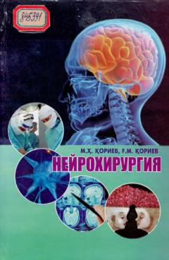

NMarkaziy va periferik asab tizimi kasalliklari hamda neyrojarrohlik asoslariga bag'ishlangan o'quv qo'llanma.
Mazkur o'quv qo'llanmada markaziy va periferik асаб tizimi jarohatlari va kasalliklari, tug'ma rivojlanish nuqsonlarining kelib chiqishi, klinik manzarasi, diagnostikasi hamda davolash choralari yoritilgan. Kitob tibbiyot oliy o'quv yurtlari talabalari, amaliy tibbiyot bilan shug'ullanuvchi neyroxirurglar, traumatologlar va nevrologlar uchun tavsiya etiladi.